Siginficance¶
Guía de usuario de SIGnificance¶
1 Introducción¶
SIGnificance es una herramienta que agrega y sintetiza indicadores de impacto de distintos componentes ambientales en un índice único de significancia.
SIGnificance emplea un algoritmo para incorporar la incertidumbre inherente durante la determinación de la significancia de impactos mediante una interfaz amigable.
La aplicación permite explorar interactivamente los distintos enfoques o posiciones respecto a los impactos ambientales de un proyecto en un territorio.
1.1 ¿Por qué es necesario SIGnificance?¶
SIGnificance facilita una discusión organizada de los principales impactos ambientales y sus implicaciones en el territorio.
SIGnificance propicia un entorno para alcanzar acuerdos sobre cómo prevenir, mitigar o compensar impactos ambientales específicos.
2 Organización del manual¶
Este manual tiene el propósito de mostrar el uso del módulo SIGnificance mediante (1) la explicación de todas las funciones de la plataforma (Sección 3. Organización de la Interfaz) y (2) la ilustración de un ejemplo de uso (Sección 4. Ejemplo de uso). Asimismo, se incluye bibliografía relevante como complemento teórico.
3 Organización de la interfaz¶
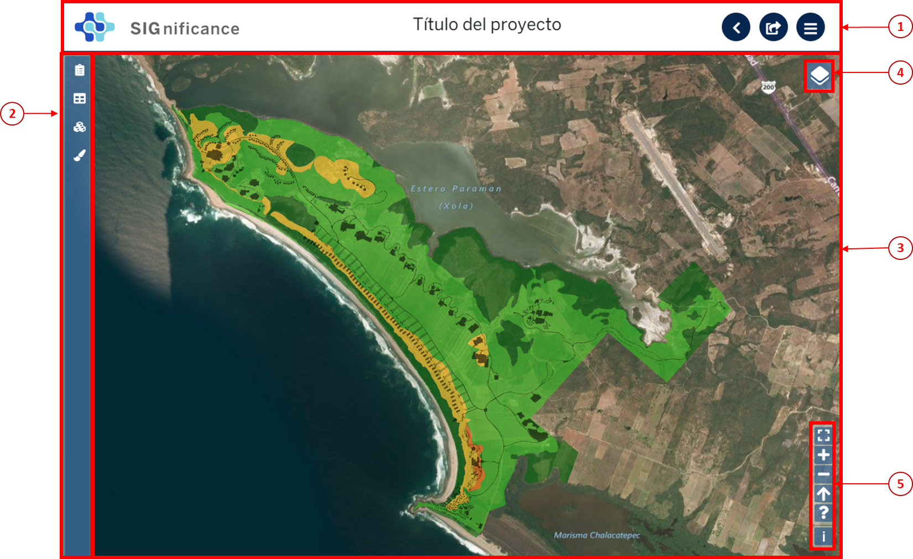La interfaz está organizada en las siguientes secciones:  el encabezado contiene al título y las funciones básicas,
el encabezado contiene al título y las funciones básicas,  en el panel izquierdo se ubica la barra de herramientas, y
en el panel izquierdo se ubica la barra de herramientas, y  el visualizador de capas incluye
el visualizador de capas incluye  los ajustes de despliegue de capas y
los ajustes de despliegue de capas y  los ajustes de visualización.
los ajustes de visualización.
3.1 Funciones básicas¶
Las funciones básicas son tres: botón de inicio, exportar resultados y regresar.
3.1.1 Botón de inicio¶
Al hacer clic en el botón de inicio  , se despliega una ventana con tres opciones: redirecciona al inicio (home) de la plataforma SIGplanning, muestra el nombre del usuario activo y cierra la sesión del usuario activo.
, se despliega una ventana con tres opciones: redirecciona al inicio (home) de la plataforma SIGplanning, muestra el nombre del usuario activo y cierra la sesión del usuario activo.
3.1.2 Exportar¶
Al hacer clic en el botón de exportar  , se descarga un shapefile de las unidades naturales en formato .zip con los resultados del uso de SIGnificance. Para que se generen el shapefile de resultados, el usuario debió haber seleccionado un enfoque y factor de progresión (ver apartados 3.5.1.1 y 3.5.1.2).
, se descarga un shapefile de las unidades naturales en formato .zip con los resultados del uso de SIGnificance. Para que se generen el shapefile de resultados, el usuario debió haber seleccionado un enfoque y factor de progresión (ver apartados 3.5.1.1 y 3.5.1.2).
3.1.3 Regresar¶
SIGnificance tiene dos opciones para regresar al catálogo de proyectos y al resto de los módulos de SIGplanning: el botón de regresar  y el ícono del módulo .
y el ícono del módulo .
{kind=link}
3.2 Visualizador de capas¶
En el visualizador de capas se muestran los resultados de SIGnificance, así como, los ajustes de despliegue de capas y los ajustes de visualización. En el visualizador se puede mover el mapa, rotar el mapa, hacer acercamientos y seleccionar atributos.
3.2.1 Mover el mapa¶
Al hacer clic en cualquier parte del visualizador de capas, mover el ratón en cualquier dirección hasta que el mapa esté en la ubicación deseada.
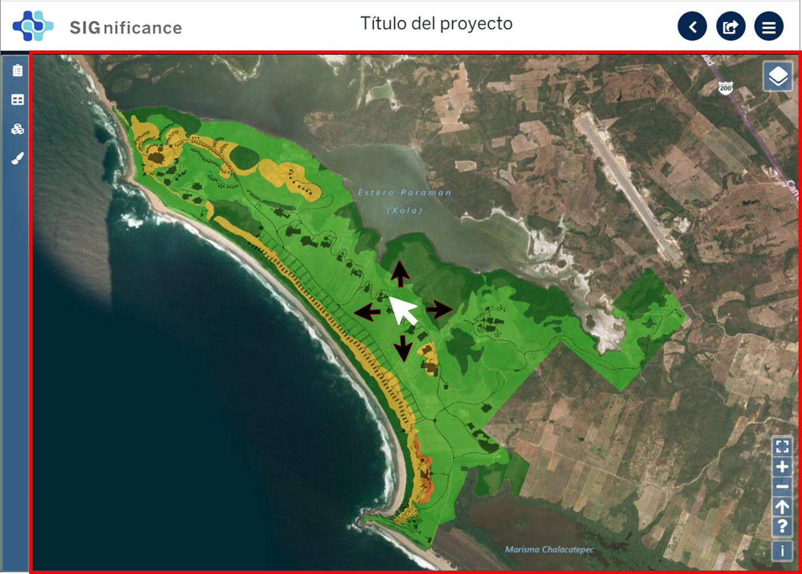3.2.2 Rotar el mapa¶
Al hacer clic en cualquier parte del visualizador de capas, sin soltar el ratón, oprimir la tecla Shift y rotar la capa hasta llegar a la orientación deseada.
Al rotar el mapa, aparece el botón del norte geográfico rotado  . Al hacer clic sobre el norte geográfico, se reposiciona el mapa a la orientación original.
. Al hacer clic sobre el norte geográfico, se reposiciona el mapa a la orientación original.
3.2.3 Hacer acercamientos¶
Al hacer clic en cualquier parte del visualizador de capas, mover la barra de desplazamiento del ratón para acercarse o alejarse.
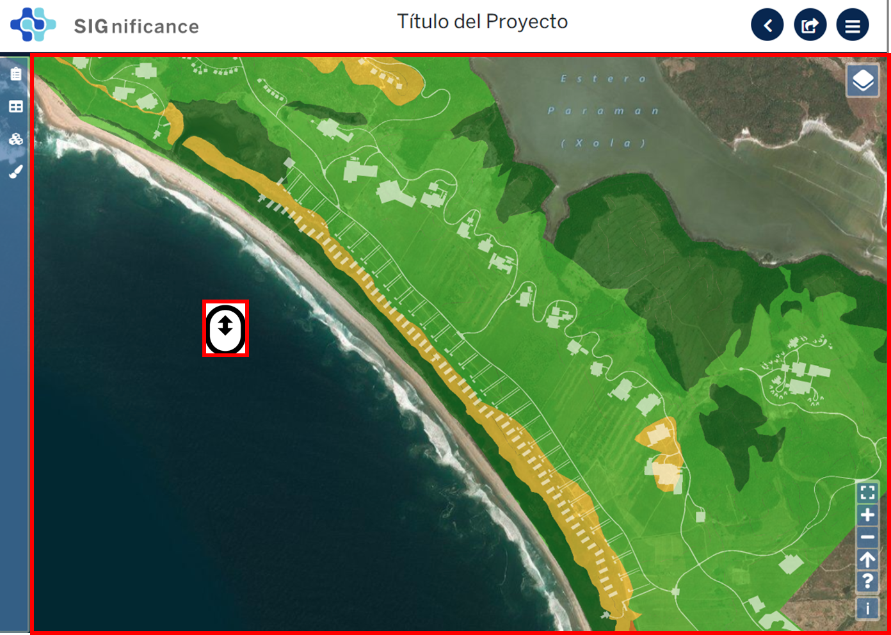3.2.4 Seleccionar polígonos¶
3.2.4.1 Selección de un polígono¶
Al hacer clic en un polígono de la capa de unidades naturales, se resalta con un contorno azul y se despliega una ventana con el valor de significancia.
3.2.4.2 Selección de varios polígonos¶
Crear una ventana de selección sobre el visualizador de capas, al oprimir la tecla Ctrl, hacer clic en la esquina superior izquierda del inicio de la ventana, desplazar el ratón hacia la derecha y abajo hasta seleccionar el número de polígonos deseados y verificar el resultado.
Para eliminar cualquier selección oprimir el botón izquierdo del ratón en cualquier lugar fuera de la capa de unidades naturales. Nota: Todas las selecciones generan un filtro de los polígonos seleccionados en la tabla de Indicadores de impacto (ver Sección 3.5.2).
3.3 Ajustes de despliegue de capas¶
Al hacer clic en el botón de ajustes de despliegue de capas  , se despliega una ventana con las opciones: activar o desactivar capas, cambiar el orden de sobreposición de las capas, cambiar la transparencia de las capas y cambiar la capa base.
, se despliega una ventana con las opciones: activar o desactivar capas, cambiar el orden de sobreposición de las capas, cambiar la transparencia de las capas y cambiar la capa base.
3.3.1 Activar o desactivar capas¶
Al hacer clic sobre las casillas de verificación  , se activan o desactivan las capas deseadas.
, se activan o desactivan las capas deseadas.
3.3.2 Cambiar el orden de sobreposición de las capas¶
Al hacer clic sobre el botón del orden de sobreposición de capas  , deslizar hacia arriba o abajo hasta que se ubiquen en el orden deseado.
, deslizar hacia arriba o abajo hasta que se ubiquen en el orden deseado.
3.3.3 Cambiar la opacidad de las capas¶
Al hacer clic sobre el control deslizante de opacidad de capas  , desplazar a la derecha o izquierda hasta llegar a la opacidad deseada.
, desplazar a la derecha o izquierda hasta llegar a la opacidad deseada.
3.3.4 Cambiar la capa base¶
Los ajustes de despliegue de capas tienen cuatro opciones de capa base: OpenLayer, Stamen, Mapa o Satélite. Al hacer clic en el botón de selección  , se selecciona la capa base deseada.
, se selecciona la capa base deseada.
Nota: La opción predeterminada es Satélite.
3.4 Ajustes de visualización¶
La sección de ajustes de visualización se compone de seis botones: cambiar al visualizador de capas en pantalla completa, acercar el mapa, alejar el mapa, reajustar el norte geográfico, ver la guía rápida de controles de despliegue y  ver la licencia de la capa base.
ver la licencia de la capa base.
3.4.1 Poner el mapa en pantalla completa¶
Al hacer clic en el botón de pantalla completa  , se muestra el área de visualización en la pantalla sin el resto de las secciones.
, se muestra el área de visualización en la pantalla sin el resto de las secciones.
Para salir de la pantalla completa, volver a oprimir el botón de los ajustes de visualización o la tecla Esc.
3.4.2 Acercar o alejar el mapa¶
Al hacer clic sobre el botón de acercar  , se aumenta el zoom en el visualizador de capas.
Al hacer clic sobre el botón de alejar
, se aumenta el zoom en el visualizador de capas.
Al hacer clic sobre el botón de alejar  , se disminuye el zoom en el visualizador de capas.
, se disminuye el zoom en el visualizador de capas.
3.4.3 Ajustar el norte del mapa¶
Al hacer clic en el botón de norte geográfico  , se reajusta la orientación del visualizador de capas a la posición original.
, se reajusta la orientación del visualizador de capas a la posición original.
3.4.4 Guía rápida de controles de despliegue¶
Al hacer clic en el botón de guía rápida de controles de despliegue  , se despliega una ventana con tres opciones: rotar el mapa, seleccionar un polígono, y hacer zoom a una ventana específica.
, se despliega una ventana con tres opciones: rotar el mapa, seleccionar un polígono, y hacer zoom a una ventana específica.
3.5 Barra de herramientas¶
3.5.1 Agregación¶
Al hace clic en el botón de Agregación , se despliega una ventana con dos paneles: Enfoques y Factor de progresión.
{kind=link}
3.5.1.1 Ver el enfoque seleccionado¶
El enfoque seleccionado en la agregación de significancia se muestra en la matriz más grande del panel y en el cuadro de texto.
3.5.1.2 Cambiar el enfoque¶
Al hacer clic en cualquiera de los botones de enfoques 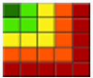, 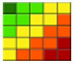, o 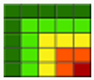, se selecciona el enfoque. La primera opción corresponde al enfoque conservacionista, la segunda opción al enfoque neutral y la tercera opción al enfoque desarrollista.
{kind=link}
{kind=link}
{kind=link}
Los enfoques se pueden identificar al posicionar el cursor sobre de ellos.
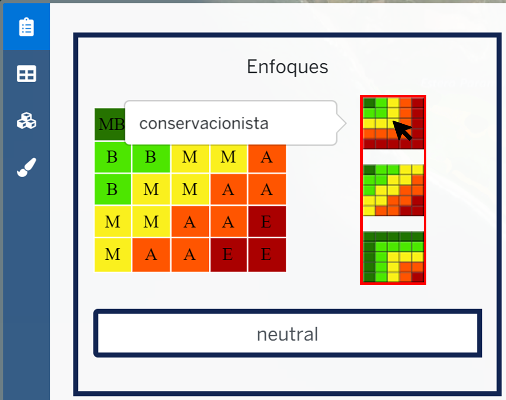Nota: La opción predeterminada es neutral.
3.5.1.3 Cambiar el nombre del enfoque¶
Al escribir en el cuadro de texto 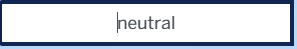, se sobrescribe el nombre original. Al hacer clic en el botón de guardar , se salva el nuevo nombre del enfoque.
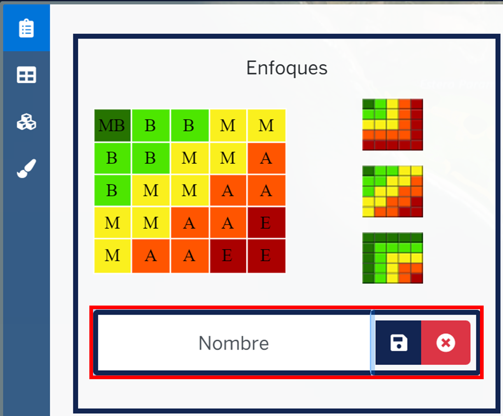{kind=link}
{kind=link}
Nota: No se recomienda cambiar los nombres predeterminados, a menos de que se haya determinado que éstos dificultan el proceso de facilitación.
3.5.1.4 Cambiar el factor de progresión¶
Al hacer clic en el botón del control deslizante y deslizar hacia la izquierda o derecha  , se selecciona el factor de progresión. Al seleccionar el factor de progresión, se actualizan la gráfica y panel de colores con los nuevos cortes de las categorías de significancia. C.E. corresponde a una clasificación equidistante.
, se selecciona el factor de progresión. Al seleccionar el factor de progresión, se actualizan la gráfica y panel de colores con los nuevos cortes de las categorías de significancia. C.E. corresponde a una clasificación equidistante.
3.5.1.5 Categorías de significancia¶
Significance usa una paleta de colores de semáforo durante la clasificación de la significancia. Esta paleta se usa tanto en los enfoques como en la selección de factores de progresión.
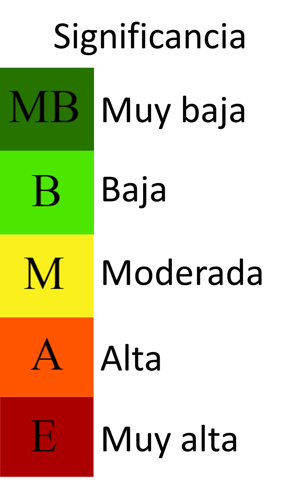3.5.2 Indicadores de impacto¶
Al hacer clic en el botón de indicadores de impacto , se despliega una ventana con los valores de la tabla de indicadores tal como se agregaron al proyecto y los resultados de la agregación .
{kind=link}
{kind=link}
3.5.2.1 Ordenar columnas¶
Al hacer clic en la flecha 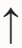 del encabezado de una columna, se ordena ascendentemente esa columna.
{kind=link}
Al hacer clic en la flecha 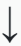 del encabezado de una columna, se ordena descendentemente esa columna.
{kind=link}
3.5.2.2 Aumentar o disminuir el tamaño de los caracteres¶
Al hacer clic en el botón 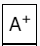, se aumenta el tamaño de los caracteres en la tabla de indicadores.
Al hacer clic en el botón 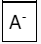, se disminuye el tamaño de los caracteres en la tabla de indicadores.
{kind=link}
{kind=link}
3.5.2.3 Ver el nombre de los campos originales en la tabla de indicadores¶
Los encabezados en la tabla de indicadores son nombrados con los primeros dos caracteres de los nombres de los campos del archivo original para los indicadores de impacto y las letras 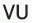 para los indicadores de vulnerabilidad. Al posicionar el ratón sobre cualquier encabezado, se despliega el nombre de los campos del archivo original.
{kind=link}
3.5.2.4 Seleccionar polígonos (renglones) específicos¶
Al hacer clic en cualquier renglón de la tabla de indicadores, se selecciona ese renglón y se selecciona su polígono correspondiente en el visualizador de capas.
Al hacer clic en cualquier área del visualizador de capas fuera del mapa, se elimina la selección.
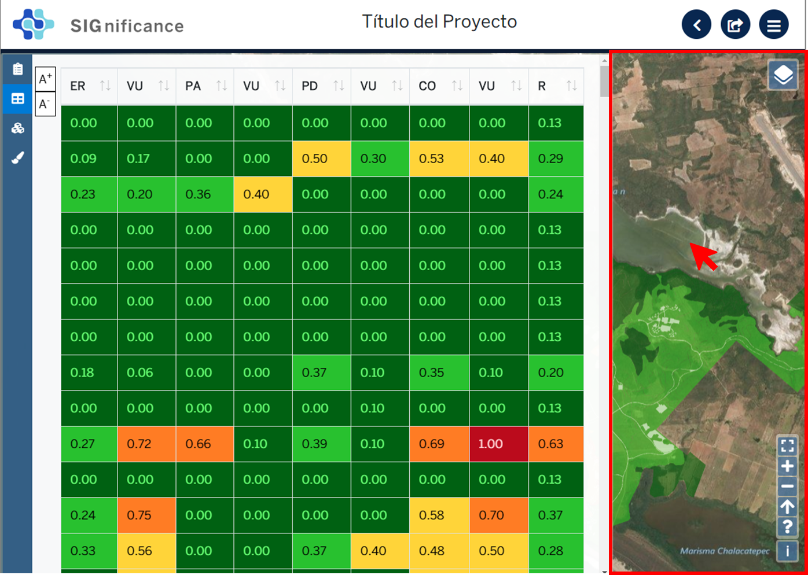3.5.3 Combo¶
El combo integra la funcionalidad de las herramientas Agregación e Indicadores de impacto en la misma ventana con el fin de facilitar el proceso de facilitación. Las funciones específicas de Agregación e Indicadores de impacto son explicadas en las herramientas 3.5.1 y 3.5.2.
{kind=link}
3.5.4 Paletas de colores¶
Al hacer clic en el botón paletas de colores  , se despliega una ventana que muestra el color de la capa plano arquitectónico.
, se despliega una ventana que muestra el color de la capa plano arquitectónico.
3.5.4.1 Cambiar el color del proyecto arquitectónico¶
Al hacer clic en el botón de paletas de colores, se despliega una ventana con dos secciones, deslizar el cursor hacia arriba o abajo para seleccionar el tono en el panel derecho (en la rampa de colores) y deslizar el cursor hasta seleccionar la saturación y brillo en el panel izquierdo.
4 Requerimientos¶
SIGnificance tiene dos opciones de importación: insumos integrados o insumos desagregados.
4.1 Insumos integrados¶
4.1.1 Shapefile de unidades naturales comprimido en formato .zip¶
- Shapefile de unidades naturales que se compone de un mínimo de cinco archivos con las extensiones: nombre**.shp**, nombre**.shx**, nombre**.dbf**, nombre**.prj** y nombre.**xml**. Puede contener más archivos con extensiones adicionales dependiendo de la forma como se creó el shapefile. Para más información revisar: https://desktop.arcgis.com/es/arcmap/10.3/manage-data/shapefiles/shapefile-file-extensions.htm
- Archivo .dbf que contiene la tabla de atributos debe incluir: un campo de número identificador, un campo con el nombre descriptivo de las unidades naturales y un campo por cada índice de impacto y su contraparte de índice de vulnerabilidad. Los valores de los campos de los índices de impacto y vulnerabilidad deben ser numéricos y normalizados entre cero y uno.
4.1.2 Shapefile del plan maestro o proyecto arquitectónico (insumo opcional)¶
- El shapefile que se compone de un mínimo de cinco archivos con las extensiones: nombre**.shp**, nombre**.shx**, nombre**.dbf**, nombre**.prj** y nombre**.xml.**
4.2 Insumos desagregados¶
4.2.1 Shapefile de unidades naturales comprimido en formato .zip¶
- Shapefile de unidades naturales que se compone de un mínimo de cinco archivos con las extensiones: nombre**.shp**, nombre**.shx**, nombre**.dbf**, nombre**.prj** y nombre**.xml**. Puede contener más archivos con extensiones adicionales dependiendo de la forma como se creó el shapefile. Para más información revisar: https://desktop.arcgis.com/es/arcmap/10.3/manage-data/shapefiles/shapefile-file-extensions.htm
- Archivo .dbf que contiene la tabla de atributos debe incluir: (1) un campo de número identificador, y (2) nombre descriptivo de las unidades naturales
4.2.2 Archivo .csv de indicadores¶
- Archivo .csv debe incluir: un campo del número identificador de la unidad natural (el mismo identificador usado en el shapefile para cada unidad natural) y un campo por cada índice de impacto y su contraparte de índice de vulnerabilidad. Los valores de los campos de los índices de impacto y vulnerabilidad deben ser numéricos y normalizados entre cero y uno.
4.2.3 Shapefile del plan maestro o proyecto arquitectónico (insumo opcional)¶
- Shapefile que se compone de un mínimo de cinco archivos con las extensiones: nombre**.shp**, nombre**.shx**, nombre**.dbf**, nombre**.prj** y nombre**.xml.**